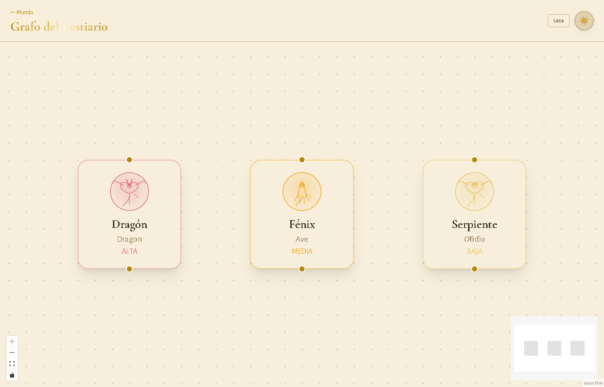
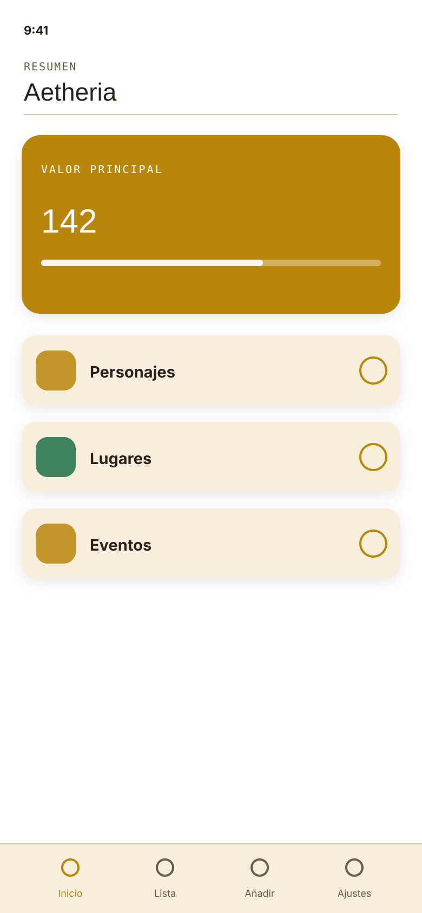
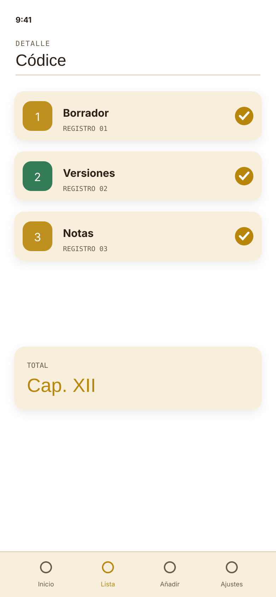
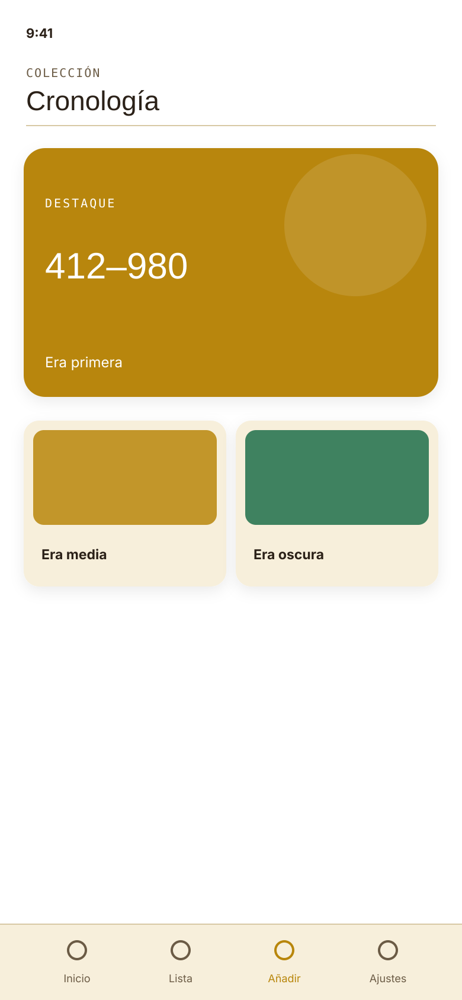
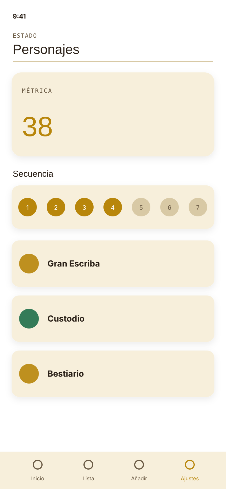

Grafo editable
Conecta personajes, lugares y eventos en un lienzo que puedes reorganizar a mano.
US-09 · Proyecto realizado · Conocimiento
World-building y manuscritos, sin salir de tu equipo

Plataforma local de world-building y gestión de manuscritos. Personajes, lugares, líneas de tiempo y documentos conectados en un grafo editable, con SQLite como fuente de verdad y sin Docker. Para quien construye mundos y necesita que nada se pierda entre notas.
01 · Funcionalidades
Conecta personajes, lugares y eventos en un lienzo que puedes reorganizar a mano.
Organiza borradores, versiones y notas con trazabilidad de cada decisión.
Toda la información vive en tu equipo. Sin contenedores ni servicios externos.
Visualiza la cronología de tu mundo y detecta inconsistencias de un vistazo.
Cormorant Garamond y JetBrains Mono para leer y escribir con claridad.
Arranca con un comando. No necesitas Docker, servidor ni cuenta.
02 · La interfaz
Composiciones de retícula que anticipan la estructura real de la aplicación.

01 · Grafo de mundo
02 · Manuscrito
03 · Línea de tiempo
04 · Personajes03 · Demo en video
Recorrido por las pantallas reales del producto: hoy, plan, hitos y logros.
05 · Tu proyecto
Estado del proyecto: Beta. Plataforma: Web local. Construido con React · SQLite · React Flow. Este es uno de los diez proyectos ya realizados por Uskein Studio.
Cuéntame tu operación y te propongo un alcance concreto: móvil, web o sistema transaccional.
Tu próximo proyecto